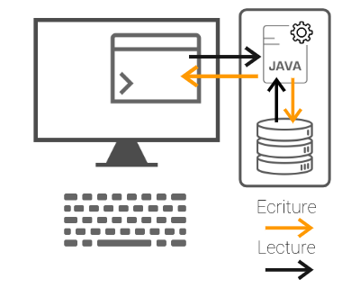

Les flux de données en Java
Qu'est ce qu'un flux de données ?
En informatique, un flux [...] est une suite infinie d'éléments gérés de façon temporelle
Flux de données = ensemble d'informations qui circulent d'une entité à une autre (fichier, ...).
Exemples d'utilisation de flux de données :
- Lecture d'un fichier texte
- Envoi de données sur un socket réseau
- Ecriture de données en ligne de commande
Les 2 types de flux
- Flux d'octets
- Flux de caractères
Les 2 sens possibles
- Input : le flux entre dans le programme (lecture)
- Output : le flux sort du programme (écriture)
Exemple
Quelques exemples d'application
Lire depuis la console
public static void readFromConsole() {
// Création de l'objet Scanner (pour lire les entrées clavier)
Scanner scanner = new Scanner(System.in);
String userName;
System.out.println("Entrez votre nom : ");
userName = scanner.nextLine();
// On ferme l'objet scanner (obligatoire !)
scanner.close();
}
Ecrire dans un fichier
public static void writeToFile(String newLearner) {
// Création de l'objet writer qui écrira dans learners.txt.
BufferedWriter writer = new BufferedWriter
(new FileWriter("learners.txt", true));
// On écrit la chaîne de caractères passées
// en argument de la fonction.
writer.write(newLearner);
// On ferme notre objet writer.
writer.close();
}
Lire depuis un fichier
public static void readFromFile() {
StringBuilder contenu = new StringBuilder();
// Création d'un objet Scanner pour lire le fichier learners.txt.
Scanner scanner = new Scanner(new File("learners.txt"));
// Tant que l'objet scanner n'est pas à la fin du fichier, on lit.
while (scanner.hasNextLine()) {
contenu.append(scanner.nextLine() + "\n");
}
// On ferme notre objet scanner car on a fini de lire le fichier.
scanner.close();
// On affiche le contenu dans la console.
System.out.println(contenu);
}
Les ressources utiles pour approfondir les notions de Stream